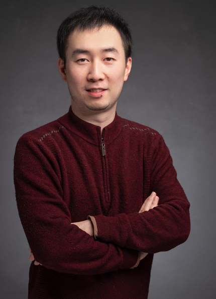

刘珂 (Ke Liu)
副研究员 / Associate Professor
硕士生导师
Institute of Computing Technology (ICT)
Chinese Academy of Sciences (CAS)
University of Chinese Academy of Sciences (UCAS)
Email: liuke@ict.ac.cn

News
News: RaidenSwap has been accepted to EuroSys 2026.
News: DRack has been accepted to USENIX ATC 2025.
News: Currently focusing on resource-disaggregated systems, CXL memory fabrics, datacenter networking, and AI infrastructure systems.
News: Recruiting motivated master students interested in systems and networking research.
欢迎对资源解耦、CXL、数据中心网络、RDMA/SmartNIC、智算系统方向感兴趣的同学联系。
About me
刘珂，中国科学院计算技术研究所副研究员，中国科学院特聘技术骨干，硕士生导师。2013年博士毕业于香港中文大学信息工程学系。2017年赴美国普渡大学做访问博士后2年。主持国家自然科学基金青年项目和面上项目、华为项目，北京面上项目，国家重点研发计划课题等。发表论文40余篇，以第一作者和通讯作者发表包括HPCA, EuroSys, ATC, ACM MM, TMC, TPDS 等CCF-A类会议和期刊。华为火花奖获得者。现专注资源解耦合系统，CXL内存总线协议，数据中心网络，以及智算系统的研究。
ICT/ACS Profile,
UCAS Profile,
Google Scholar,
DBLP Search
Research
My current research is to build efficient, predictable, and scalable systems for resource-disaggregated datacenters and AI computing infrastructure.
#1 Resource Disaggregation and CXL Systems
Resource-disaggregated datacenters pool compute, memory, storage, and accelerators across machines. This architecture improves utilization and elasticity, but it also exposes new challenges in memory access latency, performance isolation, page movement, rack-level communication, and system software control. Recent work studies CXL-based memory disaggregation, hierarchical memory systems, remote swapping, and runtime/kernel support for disaggregated memory.
#2 Datacenter Networking and RDMA Systems
Datacenter workloads need high throughput, low latency, and predictable tail behavior. My research explores datacenter transport protocols, congestion control, scheduling, RDMA networking, SmartNIC-based software/hardware co-design, and network support for memory pooling and AI workloads.
#3 Intelligent Computing and Multimedia Transport
AI and multimedia applications put new pressure on transport systems, resource scheduling, and quality-of-service control. We study data-driven transport, flexible latency control, mobile data network acceleration, video streaming, and machine-learning-driven system optimization.
Students
- 彭余康 (M.S. student, Computer Science and Technology)
- 刘可凡 (M.S. student, Computer Science and Technology)
- 李文韬 (M.S. student, Electronic Information)
- 李文杰 (M.S. Student in Computer Science and Technology, Zhengzhou University)
Projects and Awards
- 中国科学院特聘技术骨干。
- 华为火花奖获得者。
- 主持国家自然科学基金青年项目：移动数据网络中获得高吞吐率和低延迟的拥塞控制算法研究。
- 主持国家自然科学基金面上项目：数据中心近似传输协议。
- 主持或参与华为项目、北京面上项目、国家重点研发计划课题等。
- 研究成果发表于 HPCA, EuroSys, USENIX ATC, DATE, ACM MM, TMC, TPDS, TSC, ICME, IWQoS, SECON, Cluster 等会议和期刊。
Selected patents
- “一种支持优先级的标签化网络栈方法和系统”，张文力，刘珂，常轶松，于蓝，陈明宇，专利号：201811426135.9，2018.11。
- “TCP流量控制中接收窗口的确定方法和设备”，刘珂，专利号：ZL201510362384.6，2015.6。
- “网络中拥塞窗口的确定方法和装置”，刘珂，付斌章，专利号：ZL201410201059.7，2014.5。
Selected publications
(Asterisk(*) means corresponding author)
Recent systems papers
- RaidenSwap: A Multi-Swap Remote System for Multi-core Applications
by Kefan Liu, Ke Liu*, Xu Zhang, Hui Yuan, Xiaolong Zheng, Ning Liu, Sa Wang, Guanghui Zhang, Yungang Bao, Mingyu Chen
EuroSys, 2026
- DRack: A CXL-Disaggregated Rack Architecture to Boost Inter-Rack Communication
by Xu Zhang, Ke Liu*, Hui Yuan, Xiaolong Zheng, Yisong Chang, Yizhou Shan, Guanghui Zhang, Ke Zhang, Yungang Bao, Mingyu Chen
The USENIX Annual Technical Conference (ATC), 2025
- HoPP: Hardware-Software Co-Designed Page Prefetching for Disaggregated Memory
by Ke Liu et al.
IEEE International Symposium on High Performance Computer Architecture (HPCA), 2023
- MARB: Bridge the Semantic Gap Between Operating System and Application Memory Access Behavior
by Ke Liu et al.
Design, Automation & Test in Europe Conference & Exhibition (DATE), 2023
- A Data-Driven Framework for TCP to Achieve Flexible QoS Control in Mobile Data Networks
by Ke Liu et al.
IEEE/ACM International Symposium on Quality of Service (IWQoS), 2023
- Joint Upload-Download TCP Acceleration Over Mobile Data Networks
by Ke Liu, Vaneet Aggarwal, Ziyu Shao, Jack Y. B. Lee, Mingyu Chen
IEEE International Conference on Sensing, Communication and Networking (SECON), 2017
Journal papers
- On Improving TCP Performance over Mobile Data Networks
by Ke Liu, Jack Y. B. Lee
IEEE Transactions on Mobile Computing, 2016, 15(10): 2522-2536
- Optimizing TCP Loss Recovery Performance Over Mobile Data Networks
by Ke Liu, Zhongbin Zha, Wenkai Wan, Vaneet Aggarwal, Binzhang Fu, Mingyu Chen
IEEE Transactions on Mobile Computing, 2020, 19(6): 1401-1419
- Post-Streaming Wastage Analysis: A Data Wastage Aware Framework in Mobile Video Streaming
by Guanghui Zhang, Ke Liu*, Haibo Hu, Vaneet Aggarwal, Jack Y. B. Lee
IEEE Transactions on Mobile Computing, 2021
- A Unified Framework for Flexible Playback Latency Control in Live Video Streaming
by Guanghui Zhang, Jack Y. B. Lee, Ke Liu*, Haibo Hu, Vaneet Aggarwal
IEEE Transactions on Parallel and Distributed Systems, 2021, 32(12): 3024-3037
More information